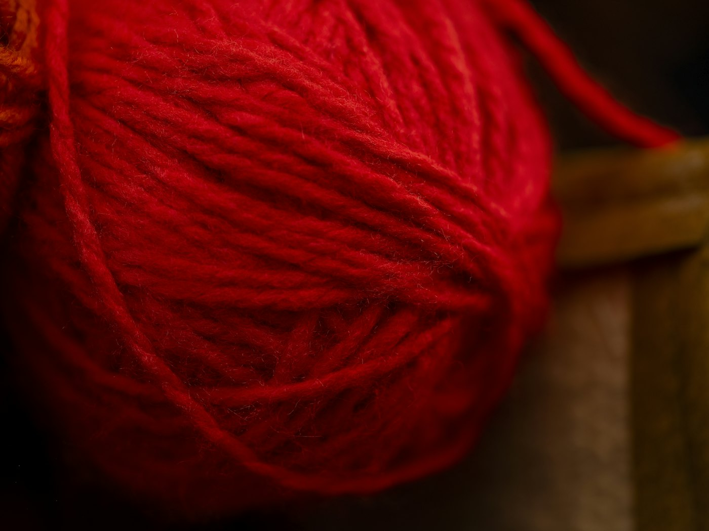

01
Legami e relazioni
Dipendenza relazionale, affettiva e sessuale. Ghosting, inganni e truffe affettive online. Separazioni, infedeltà, difficoltà del maschile.
- Truffe affettive online
- Coppia, crisi e separazioni
- Dipendenze affettive e sessuali
- Difficoltà del maschile